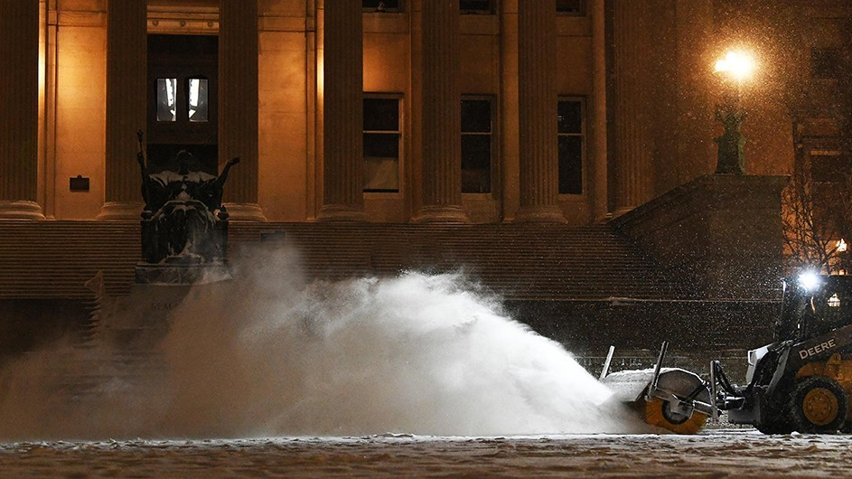

By Kelly Moffitt
December 15, 2021
TOP STORY: 6 Photos That Show There Is 'Snow' Place Like Columbia During a Nor'easter
When 16 inches of snow blanket Columbia’s campus, it is something to write home about. Also worthy of writing home? The news that groundbreaking physicist and late Columbia professor Chien-Shiung Wu was recognized on a postage stamp for altering the way scientists view the structure of the universe. February also marked Columbia’s love stories to love and the recognition of Black history in a special reading list and a list of 8 trailblazing Black activists with Columbia ties.